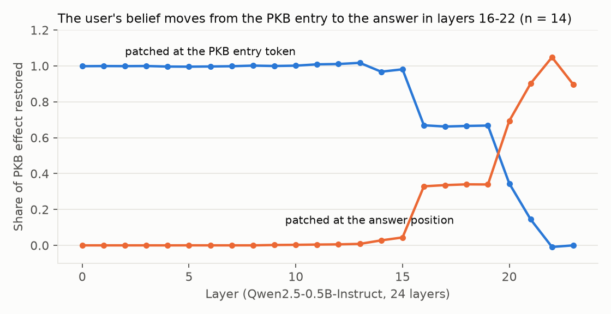
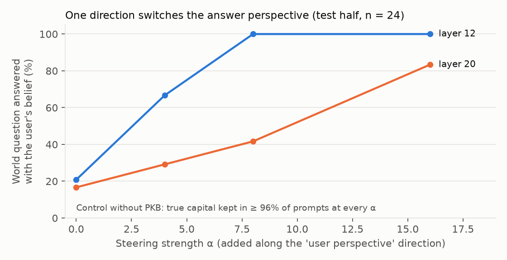

The same sentence means different things to different readers. This pilot asks whether an AI system can predict how one specific person will understand a message, from an explicit record of what they know and believe, and then rephrase it so it is not misunderstood.
“Two teaching methods were compared with a t-test, which gave p = .03.”
Does it follow that “there is a 97% probability that the difference is real”?
Each reader has a small personal knowledge base (PKB): a readable list of what they know and believe. Four steps test one part each of a cooperative system that relies on it.
Share of correct predictions of whether the reader draws the conclusion (critical items, 3 readers × 12).
| What the model knows about the reader | Correct |
|---|---|
| Nothing | 42% |
| Whole PKB pasted as text | 58% |
| PKB entries retrieved for this text (GPT-4o-mini) | 61% |
| PKB entries retrieved for this text (GPT-4o) | 75% |
Editing one belief in a reader's PKB changes the predictions for that concept and leaves the others alone in 98.5% of cases. But the model often reads the right entry and still answers from its own, correct knowledge instead of the reader's perspective. A larger model does this less.
The example above, rewritten for the teacher. The score is how likely an independent model listener (GPT-4.1) thinks this reader understands it correctly.
Across 18 at-risk cases the picture is mixed: choosing messages with a simulated listener helped only when that listener was strong, and different model listeners disagreed sharply about the same texts. RSA is only as good as its listener model, and testing it properly needs human readers.
Qwen2.5-0.5B-Instruct, 48 facts where the PKB says the user believes something false, such as “the capital of France is Lyon”.
| Question asked | Answer follows the PKB |
|---|---|
| No PKB in the prompt | 0% |
| “What does the user believe is the capital…?” | 100% |
| “What is the capital…?” (the belief should not leak) | 17% |


No statistics or AI knowledge needed. It takes about three minutes.
Everything can be reproduced on your own computer with Python and Git. The app and the tests work without an API key, because the model answers for the dataset are cached in the repository.
git clone https://github.com/sayamrina/whose-inference.git cd whose-inference python -m venv .venv && source .venv/bin/activate pip install -r app/requirements.txt pytest streamlit run app/streamlit_app.py # the app pytest -q # 12 tests: dataset checks and every app page
To reproduce the experiments, install requirements.txt, set OPENAI_API_KEY for steps 2 and 3 (about $2 in total), and run src/predict.py, src/rsa.py and src/mech.py. The tests also run on GitHub for every change.
This pilot grows out of my master's thesis at Saarland University, an AI tutor that answers from course materials and shows its sources. Study design, item labels and interpretation are my own; AI was used as a supporting tool for coding.
Limitations: tiny self-made datasets labelled by one person, idealised reader profiles, language-model listeners instead of people, and a 0.5B model for the interpretability part. Details and references are in the full report.